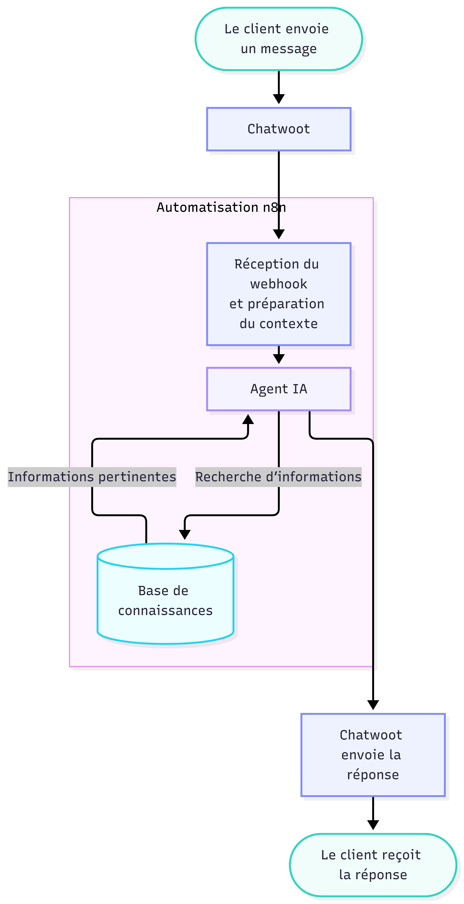

01 · Assistant conversationnel
Un chatbot intégré au site de l’entreprise
Expérience : Propitech · BILP
Le besoin
Donner aux visiteurs un accès rapide aux informations de l’entreprise, tout en cadrant les sujets auxquels l’assistant peut répondre.
Ma démarche
J’ai orchestré les échanges avec n8n, comparé Slack et Chatwoot comme canaux de messagerie, et rassemblé les informations utiles depuis plusieurs sources, dont le site et Nextcloud. Cette préparation de la base de connaissances et des consignes de l’agent a permis de délimiter son périmètre. J’ai aussi développé un plugin sur mesure pour le CMS SPIP.
Après comparaison, Chatwoot a été retenu : Slack répondait moins bien au besoin d’intégration au site.
Résultat
Le chatbot est déployé sur sundiy.fr. Les mesures du projet indiquaient environ 92 % de réponses correctes et un temps moyen de réponse de 1,2 seconde.
n8nChatwootSPIPPHPAgent IA
